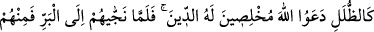
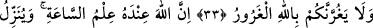
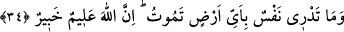

İNSANLARIN BİLEMEDİĞİ BEŞ ŞEY
(MUĞAYYEBÂT-I HAMSE)
31. Size varlığının delillerini göstermesi için, Allâh’ın lütfuyla gemilerin denizde
yüzdüğünü görmedin mi? Şüphesiz bunda, çok sabreden, çok şükreden herkes için
ibretler vardır.
32. Dağlar gibi dalgalar onları kuşattığı zaman, dini tamamen Allâh’a has kılarak
(ihlâsla) O’na yalvarırlar. Allah onları karaya çıkararak kurtardığı vakit içlerinden
bir kısmı orta yolu tutar. Zaten bizim âyetlerimizi, ancak nankör hâinler bilerek
inkâr eder.
33. Ey İnsanlar! Rabbinize karşı gelmekten sakının. Ne babanın evlâdı, ne evlâdın
babası nâmına bir şey ödeyemeyeceği günden çekinin. Bilin ki, Allâh’ın verdiği söz
gerçektir. Sakın dünyâ hayatı sizi aldatmazsın ve şeytan, Allâh’ın affına
güvendirerek sizi kandırmasın.
34. Kıyâmet vakti hakkındaki bilgi, ancak Allâh’ın katındadır. Yağmuru O
yağdırır, rahimlerde olanı O bilir. Hiç kimse yarın ne kazanacağını bilemez. Yine
hiç kimse nerede öleceğini bilemez. Şüphesiz Allah, her şeyi bilendir, her şeyden
haberdardır.
Ey durumu görmek ve müşâhede etmek olan kişi! “Size varlığının delillerini” tek
oluşunun, ilminin, kudretinin işâretlerini, san‘atının hayranlık veren tecellilerini
“göstermesi için, Allâh’ın lütfuyla” sebeplerini hazırlama konusunda Allah Teâlâ’nın